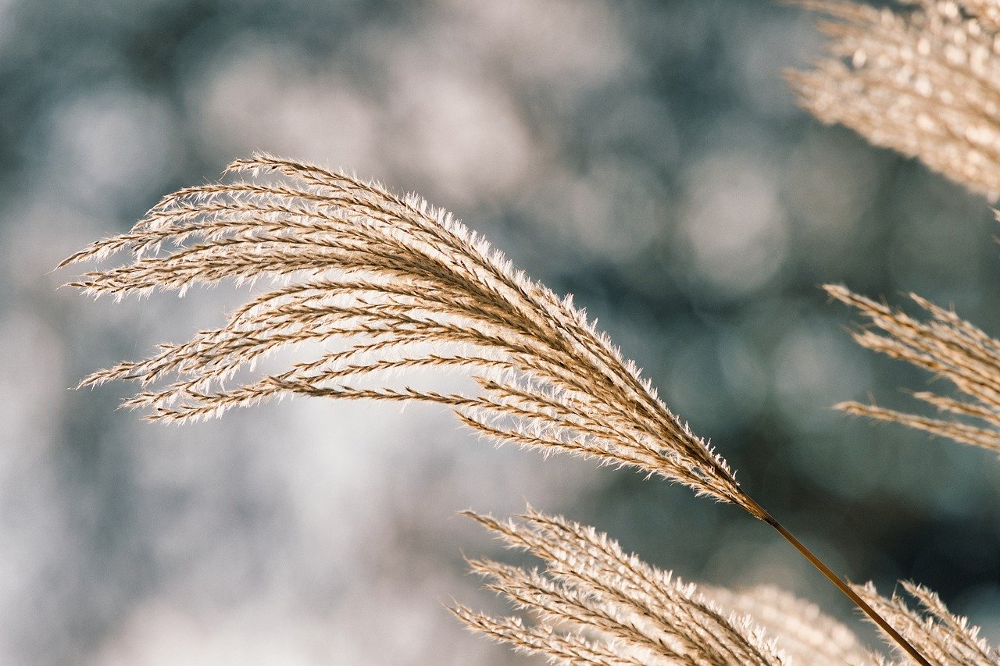

About
高次素材設計技術研究舎(Melt.)
の幽霊会員.
IACILSという団体の会員でもある. なお、記載させていただいている所属は当時のものになります.
作ったor関わったもの
2021- コンピュテーショナル食感デザインプロジェクト
Mutsushi Asai(Metalium LLC), Kentaro Saito(FabCafe Nagoya), Ryosuke Wakasugi（Byte Bites inc.）, Eri Nakasuga（慶応Future Crafts）, Kakeru Funai（東大DLX）, Makoto Amano , Kei Ichikawa（IACILS）Kei Ichikawa
イベント
2021- NFT x 伝統文化の可能性「Proof of Japan x FabCafe Kyoto」
村山 カズマサ（京都村正,
長艸 真吾（株式会社繡司長艸）,
市川 慧（IACILS）,
磯野 太佑（Funder Storm / SMBC日興証券株式会社）,
羽間 弘善（株式会社リーフ・パブリケーションズ）,
増田醇一（増田德兵衞商店 ）,
伊澤 諒太（Proof of Japan株式会社）,
蔡 海（HUMAN AWESOME ERROR）,
福原 志保（HUMAN AWESOME ERROR）
2021- Fungible？ VOL.1 -NFTから考える未来の美-
秋庭史典（名古屋大学）, 伊村靖子（情報科学芸術大学院大学[IAMAS]）, 松井茂（情報科学芸術大学院大学[IAMAS]）, 加藤 明洋（drawCircle合同会社） , 市川 慧（IACILS）
書いてもらったもの
書いたもの
2022 NFTプロジェクトの栄枯盛衰 — フロア価格推移の定型パターン
古河 耀元, 市川 慧
Copyright ©︎ Kei Ichikawa All Rights Reserved.